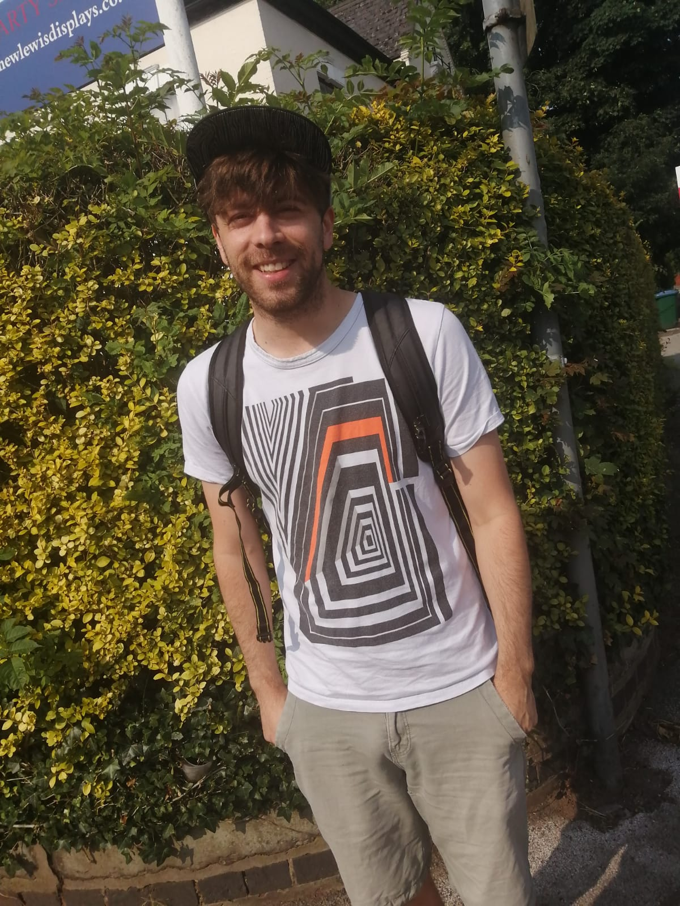

Homepage of Jan Grebík

Address:
Institute of Mathematics
Universität Leipzig
Neues Augusteum
Augustusplatz 10
04109 Leipzig Germany
grebikj [at] gmail.com
I am a Marie Skłodowska-Curie postdoctoral fellow at the Institute of Mathematics at Universität Leipzig, previously at Department of Mathematics at UCLA and at the Faculty of Informatics at MU, my mentors are Dan Kral and Itay Neeman.
You can find more details about my Global MSCA Postdoctoral Fellowship here BORCA.
I am interested combinatorics, descriptive set theory, random processes and distributed computing.
Selected publications:
- Measurable Vizing's theorem, accepted to Forum Math. Sigma (2025), [arXiv, Journal].
- (with S. Brandt, Y. Chang, C. Grunau, V. Rozhoň, Z. Vidnyánszky) On Homomorphism Graphs, Forum Math. Pi 12 (2024), e10, [arXiv, Journal].
- (with V. Rozhoň) Local Problems on Grids from the Perspective of Distributed Algorithms, Finitary Factors, and Descriptive Combinatorics, Adv. Math. 431 (2023), [arXiv, Journal].
- (with R. Greenfeld, V. Rozhoň, T. Tao) Measurable tilings by abelian group actions, Int. Math. Res. Not 23 (2023), [arXiv, Journal].
- (with O. Pikhurko) Measurable versions of Vizing's theorem, Adv. Math. 374 (2020), [arXiv, Journal].
I have recieved the 2022 Mary Ellen Rudin Young Researcher Award.
Before I was a research fellow at the University of Warwick working with O. Pikhurko and a member of the Leverhulme Research Project Grant RPG-2018-424 "Measurable Combinatorics" (2019-2023). I completed my PhD at the Charles University in 2020 working under supervision of David Chodounský.
Publications, also available on arXiv
Google scholar
MathSciNet
ORCID:  orcid.org/0000-0002-9980-4660
orcid.org/0000-0002-9980-4660
Here is my short [CV]
Survey: (with Z. Vidnyánszky) From descriptive to distributed, accepted to Zbornik Radova (2025), [arXiv].
Events that I co-organize
UCLA Logic Colloquium, Los Angeles, spring 2024
Algomanet - spring 2024, Jagiellonian University, Krakow, May 20-24, 2024.
Thematic semester on Measurable Combinatorics, Erdős Center, Budapest, spring 2024
AlgoMaNet – autumn 2024, University of Warsaw, Warsaw, September 9 -13, 2024.
One day Combinatorics meeting, Masaryk Unviersity, Brno, Novemeber 15 - 16, 2024.
Winter School in Abstract Analysis 2025, Hejnice, Jan 25 - Feb 1, 2025.
AlgoMaNet – spring 2025, Charles University, Prague, 30 June - 4 July 2025
AlgoMaNet – autumn 2025, Eötvös Loránd University, Budapest, 1 September - 5 September 2025
Warwick related
2022-2023, Term 1, Functional analysis I
2021-22, Term 1,
Distributed Computing, Random Processes and Descriptive Combinatorics, Tuesdays 1pm
2020-2022, Warwick's Combinatorics Seminar